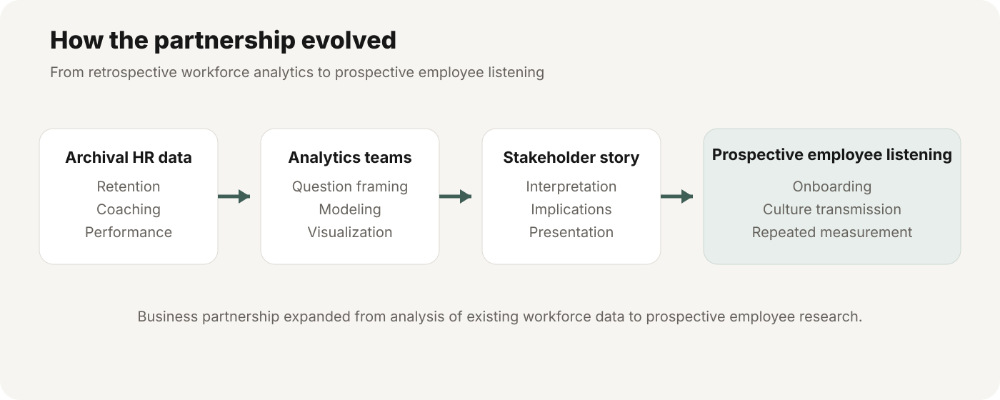
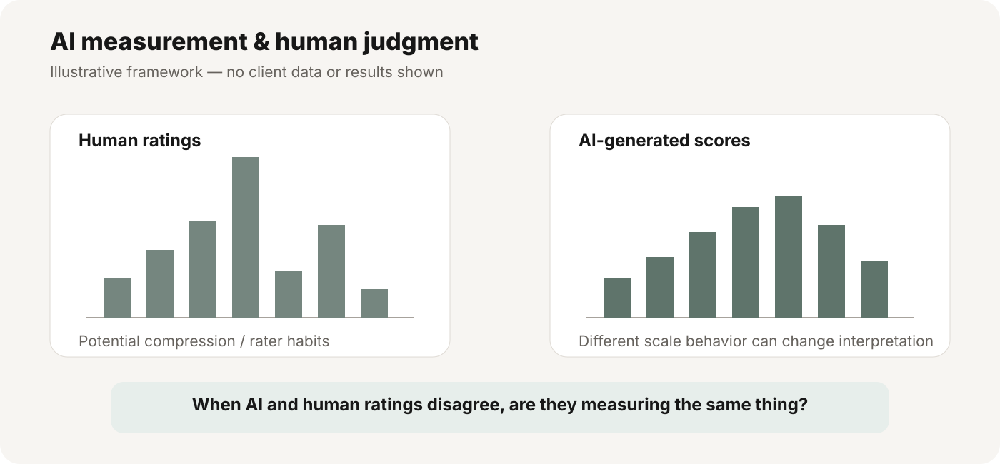
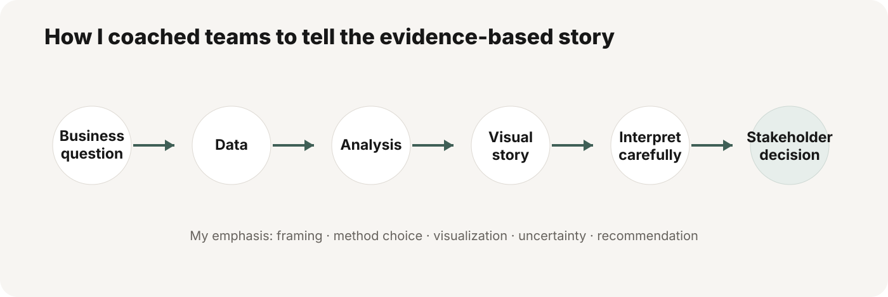

Omaha Steaks — Building a Multi-Year People Analytics & Employee Listening Partnership
A multi-year partnership with Omaha Steaks that began with archival workforce analytics — including questions around AI-based employee evaluation — and expanded into prospective employee research on onboarding, employee experience, and how effectively organizational culture is transmitted to a short-tenure remote workforce.
How the partnership evolved
The work began as a client-facing HR Analytics practicum using confidential workforce data. I guided teams through business-question framing, analytical choices, interpretation, visualization, and stakeholder presentation. The relationship later expanded into a prospective employee-listening collaboration, allowing us to move from retrospective workforce analysis toward repeated measurement of employee experience.

Phase 1 — Archival people analytics
I structured several parallel workstreams around real workforce questions rather than giving every team the same assignment. The specific results and internal metrics remain confidential, but the workstreams included retention, coaching, performance measurement, and work behavior.
Workstream 1: Early indicators of retention
- Which early signals are associated with different workforce outcomes?
- Which early behaviors are related to later performance?
- Which metrics are useful enough to support coaching or staffing decisions?
Workstream 2: Coaching & manager interactions
- Does more coaching correspond to better outcomes?
- Does meeting quantity matter, or is interaction quality more important?
- How should null and mixed findings change the managerial question?
Workstream 3: Human vs. AI-based performance measurement
One team compared human ratings with AI-generated employee evaluation scores as a measurement problem rather than a simple technology comparison. I coached the team to consider convergent validity, criterion validity, score distributions, and whether human and AI scoring systems might be capturing different aspects of performance.

Workstream 4: Work activity & performance
- How do patterns of work activity relate to later performance outcomes?
- Which intuitive workforce metrics actually add useful information?
- How can multivariable results be summarized without overwhelming stakeholders?
My role in Phase 1
- Business-question framing and project scoping
- Variable selection and analysis guidance
- Interpretation and limitation review
- Visualization and storytelling coaching
- Client-facing presentation and recommendation review
AI measurement & human judgment
The AI component made the project especially relevant to current people analytics practice. Rather than asking whether AI was simply “better” than human judgment, I guided the team to ask a more useful set of questions: Do AI and human ratings converge? Which outcomes does each system relate to? Are differences caused by measurement properties such as score compression or restricted range? And what evidence would be needed before using AI-generated scores in higher-stakes workforce decisions?
Teaching analytics communication
- Move beyond a headline statistic: inspect distributions and measurement properties before interpreting agreement between AI-generated and human ratings.
- Translate complex models: convert dense statistical output into a comparison view that non-technical stakeholders can use.
- Use null findings well: avoid forcing a positive story and use mixed evidence to sharpen the next business question.
- Separate significance from usefulness: emphasize effect magnitude, model fit, uncertainty, and practical relevance.

From results to management decisions
The retrospective analyses revealed three decision-relevant issues: limited convergence between human and AI-based performance evaluations; early behavioral measures associated with later retention and performance; and coaching patterns that did not demonstrate the anticipated benefits. Instead of treating these associations as causal explanations, I organized them into a research agenda with specific next steps.
- Evaluation quality: recommend assessing score alignment and criterion validity before using human and AI ratings interchangeably in consequential decisions.
- Early employee experience: investigate why first-week behaviors predict later outcomes and whether those signals could support timely interventions.
- Coaching: revisit assumptions about coaching quantity and evaluate the role of interaction quality and worker context.
- Next research phase: design repeated employee surveys linked to operational metrics to examine onboarding, stress, organizational culture, and reasons for leaving.
Stakeholder response: the partnership expanded from archival analysis into planning a prospective employee-listening study. Findings are generalized here to protect client confidentiality; proposed actions should not be confused with implemented interventions.
Phase 2 — Measuring culture transmission in a temporary remote workforce
The prospective phase asks a broader employee-listening question: How effectively is organizational culture transmitted to temporary remote workers, and what experiences help or hinder that process?
Research questions under development
- How quickly do short-tenure remote employees come to understand and internalize organizational culture?
- Which onboarding and manager experiences strengthen or weaken culture transmission?
- How do socialization and employee experience change across repeated survey waves?
- How might these experiences relate to later performance or continued employment?
My role in Phase 2
- Work directly with HR stakeholders to clarify business priorities
- Develop the construct list and measurement plan
- Evaluate weekly versus higher-frequency survey designs
- Balance survey burden, short-form measurement, and incentives
- Plan IRB, organizational approvals, and stakeholder deliverables
Status
Study design and stakeholder alignment are in progress. The prospective component is presented here as a research program in development rather than as completed findings.
Confidentiality approach
This portfolio intentionally omits internal sample counts, exact variables, coefficients, screenshots, p-values, proprietary business processes, and client-specific findings.